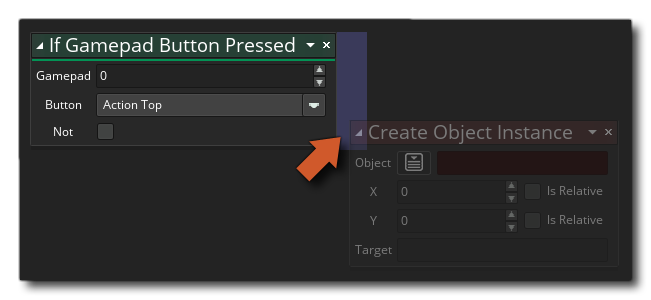

Wenn Gamepad-Taste gedrückt wird Wenn Gamepad-Taste gedrückt wird
Wenn Gamepad-Taste gedrückt wird Wenn Gamepad-Taste gedrückt wird Mit dieser Aktion können Sie das Gamepad abfragen, um zu sehen, ob gerade eine Taste gedrückt wird. Die Aktion wird zurückkehren true Jeder Schritt, bei dem die Gamepad-Taste gedrückt (und gehalten) wird, oder false Ansonsten, wenn Sie auf die Schaltfläche klicken not Modifikator Sie können dann überprüfen, ob die Taste nicht gedrückt wird, dh: die Aktion wird zurückkehren true während keine Taste gedrückt wird und false Wenn da ist. Wenn Sie nur nach einer einzigen Taste suchen müssen, drücken Sie die Aktion, wenn die Gamepad-Taste gedrückt ist.
Beachten Sie, dass Aktionen zum "if" -Block hinzugefügt werden sollten, wie in der folgenden Abbildung gezeigt:
 Diese Aktionen werden jetzt ausgeführt, wenn das "if" ausgewertet wird true, während alle anderen Aktionen nach dem "if" -Block ausgeführt werden.
Streit Beschreibung Gamepad Der Gamepad-Index. Button Der Name des zu überprüfenden Buttons. Not Annulliere die Prüfung (wahr wird falsch und umgekehrt)
Der obige Aktionsblockcode fragt den Tastenzustand von Gamepad 0 bei jedem Schritt ab und wenn eine Taste gedrückt gehalten wird, prüft er, ob die erste Taste gedrückt ist. Wenn der Scheck ist true Beim ersten Drücken der Taste wird ein Ton wiedergegeben, und während die Taste gedrückt gehalten wird, wird die Sprite-Überblendung in Rot geändert. Wenn die Taste nicht gedrückt gehalten wird, erfolgt eine Überprüfung der Tastenfreigabe, um die Mischfarbe auf Weiß zurückzusetzen.